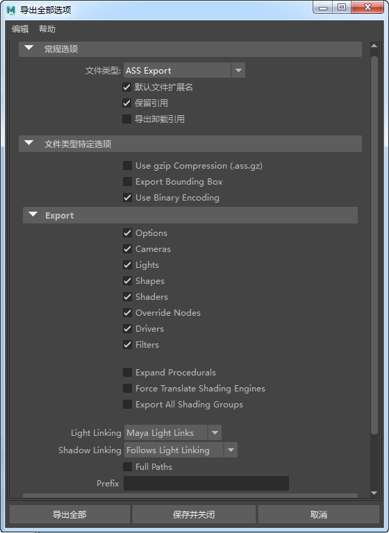

Arnold 场景源 (.ass) 是原生场景定义格式，存储在用户可读的可编辑 ASCII 文件中。
使用 MtoA 可以将场景保存为 .ass 文件，以便随后可以在 Maya 外部使用 kick（一种多平台命令行工具）进行渲染，或用于通过替代对象进行渲染。
从“文件 > 导出全部/导出当前选择”(File > Export All/Export Selection)菜单中，选择“ASS 导出”(ASS Export)作为文件类型。该对话框将在对话框“选项”(Options)区域的“文件类型特定选项”(File Type Specific Options)部分下显示一些与 Arnold 相关的选项。

直接将场景导出为具有 .ass.gz 扩展名的 gzip 压缩文件。压缩率一般在 4-5 倍之间（相比于完整 ASCII 格式，当然如果使用了二进制编码选项，压缩率将较低）。
指定是否在单独的 .asstoc 文件中包含导出场景的边界框。
指定是否使用二进制编码来压缩组件中含有浮点的大型数组（大于 16）。这些数组会编码成更加紧凑的 ASCII 表示形式 (b85)，从而有助于减小文件并提高加载速度，同时在大多数时候也方便用户阅读。此外，二进制编码具有精确的 32 位精度，而如果不使用这种二进制输出，浮点值将被截断成最多 8 位 ASCII（例如 1234.5678）。编码数组由“b85”数组类型前缀表示，具体如以下示例所示。POINT2、POINT 和 VECTOR 数组已进行编码。16 位浮点
polymesh
{
name mymesh
nsides 54 1 UINT 3 3 3 3 3 3 3 3 3 4 4 4 4 4 4 4 4 4 4 4 4 4 4 4 4 4 4 4 4 4 4 4 4 4 4 4 4 4 4 4 4 4 4 4 4 3 3 3 3 3 3 3 3 3
vlist 47 1 b85POINT`
LJ4iv4THCEE/NV4/1nPCvhpuBkEMk10/LJ4iv2uf+kDVzHI/36OGvhkc/kD9+Fs/LGenvtmU8EDqJVo/l1cGv+Ij50D1
...您还可以指定在 .ass 导出中包含以下哪些类型的节点：
将场景中对象的“着色引擎”导出为 ass 文件，但不导出从这些对象派生的着色网络。
该选项会将几何体 ass 文件从着色器 ass 文件分离，并允许用户从外部控制着色指定。
启用后，将导出所有着色组（或仅限导出时选定的着色组），即使这些着色组未指定给场景中的任何几何体。这样可防止将着色器指定给虚拟对象。
关闭灯光链接（“无”(None)），或使用 Maya 灯光链接（“Maya 灯光链接”(Maya Light Links)）。
阴影链接可设置为与灯光链接相同的设置（“沿用灯光链接”(Follows Light Linking)），也可以明确指定阴影链接应该关闭（“无”(None)）或使用 Maya 的阴影链接（“Maya 阴影链接”(Maya Shadow Links)）。
根据在“开始”(Start)/“结束”(End)中设置的帧数导出 .ass 文件序列。
指定要导出的序列的开始帧。
指定要导出的序列的结束帧。
要导出的各帧之间的增量。